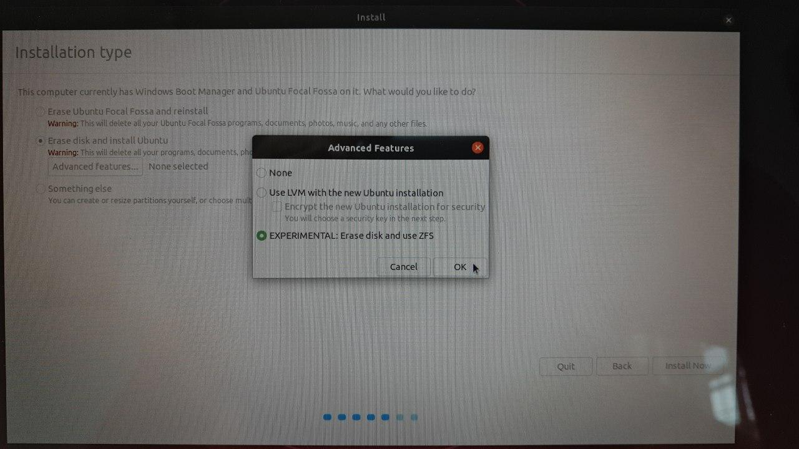

Setup LXD with Ubuntu's ZFS on root
I want to have a head start to make sure Ubuntu 20.04 works flawlessly by the time it releases. I am however making some bold moves, like setting up ZFS on Root during install which is currently marked as EXPERIMENTAL.

TODO zfs on root screenshot
After the installation is done, we can check that the installer creates two pools:
$ zpool list
NAME SIZE ALLOC FREE CKPOINT EXPANDSZ FRAG CAP DEDUP HEALTH ALTROOT
bpool 1,88G 178M 1,70G - - 0% 9% 1.00x ONLINE -
rpool 472G 118G 354G - - 0% 25% 1.00x ONLINE -For development, I use LXD, a very nice and well thought system container manager, installed through the Snap Store:
On Ubuntu (at least), LXD detects that the system is ZFS-ready, but I need to
manually inform it about the dataset I want to use, so I create a dataset on
rpool to keep things tidy:
sudo zfs create rpool/LXD
So then I just run lxd init and fill in the required information:
$ sudo lxd init
Would you like to use LXD clustering? (yes/no) [default=no]:
Do you want to configure a new storage pool? (yes/no) [default=yes]:
Name of the new storage pool [default=default]:
Name of the storage backend to use (btrfs, ceph, dir, lvm, zfs) [default=zfs]:
Create a new ZFS pool? (yes/no) [default=yes]: no
Name of the existing ZFS pool or dataset: rpool/LXD
Would you like to connect to a MAAS server? (yes/no) [default=no]:
Would you like to create a new local network bridge? (yes/no) [default=yes]:
What should the new bridge be called? [default=lxdbr0]:
What IPv4 address should be used? (CIDR subnet notation, “auto” or “none”) [default=auto]:
What IPv6 address should be used? (CIDR subnet notation, “auto” or “none”) [default=auto]:
Would you like LXD to be available over the network? (yes/no) [default=no]:
Would you like stale cached images to be updated automatically? (yes/no) [default=yes]
Would you like a YAML "lxd init" preseed to be printed? (yes/no) [default=no]:After this, LXD has made use of the dataset:
$ zfs list | grep 'rpool/LXD'
rpool/LXD 960K 339G 96K none
rpool/LXD/containers 96K 339G 96K none
rpool/LXD/custom 96K 339G 96K none
rpool/LXD/deleted 480K 339G 96K none
rpool/LXD/deleted/containers 96K 339G 96K none
rpool/LXD/deleted/custom 96K 339G 96K none
rpool/LXD/deleted/images 96K 339G 96K none
rpool/LXD/deleted/virtual-machines 96K 339G 96K none
rpool/LXD/images 96K 339G 96K none
rpool/LXD/virtual-machines 96K 339G 96K noneIf I launch a container:
$ lxc launch ubuntu:18.04
Creating the instance
Instance name is: fleet-terrapin
Starting fleet-terrapinThe datasets will look like:
$ zfs list | grep 'rpool/LXD'
rpool/LXD 452M 338G 96K none
rpool/LXD/containers 20,0M 338G 96K none
rpool/LXD/containers/fleet-terrapin 19,9M 338G 432M /var/snap/lxd/common/lxd/storage-pools/default/containers/fleet-terrapin
rpool/LXD/custom 96K 338G 96K none
rpool/LXD/deleted 480K 338G 96K none
rpool/LXD/deleted/containers 96K 338G 96K none
rpool/LXD/deleted/custom 96K 338G 96K none
rpool/LXD/deleted/images 96K 338G 96K none
rpool/LXD/deleted/virtual-machines 96K 338G 96K none
rpool/LXD/images 431M 338G 96K none
rpool/LXD/images/979ff60086ca9fb1c93d3131f8eca291820a524f0bd0b7d621a3c2f5f41ef185 431M 338G 431M /var/snap/lxd/common/lxd/storage-pools/default/images/979ff60086ca9fb1c93d3131f8eca291820a524f0bd0b7d621a3c2f5f41ef185
rpool/LXD/virtual-machines 96K 338G 96K noneAnd launching a new container based out of the same image, should be a lot faster.